"국비 훈련(KDT) 학습자의 완주를 돕는 AI 에이전트"
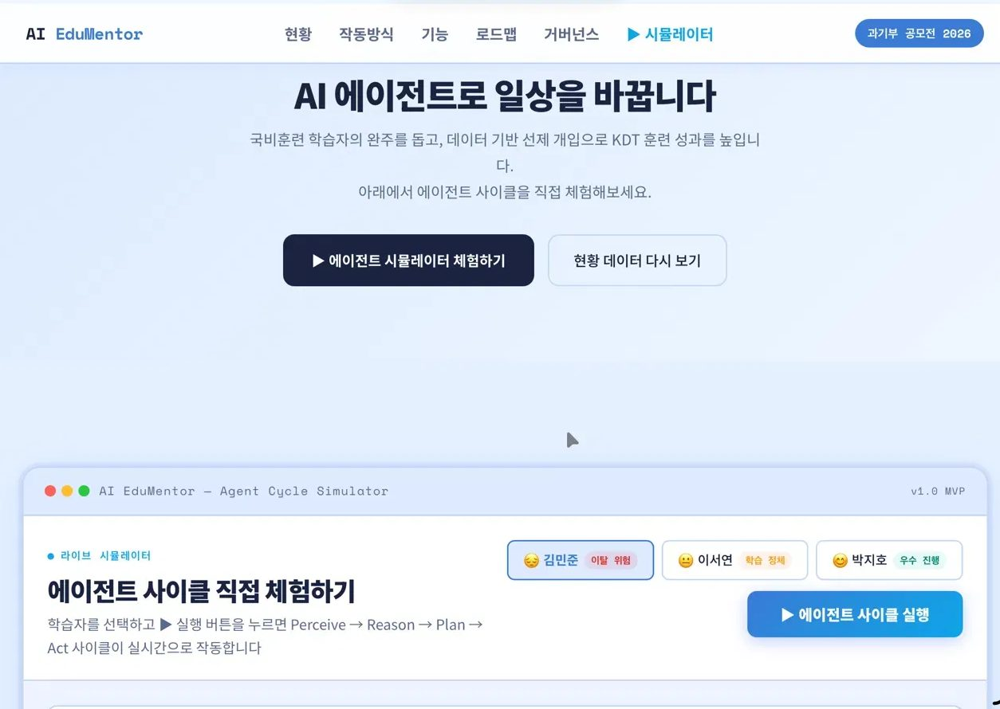
국비 훈련(KDT · K-Digital Training)은 청년의 디지털 직무 전환을 지원하는 대표 정책이지만, 완주하지 못하고 이탈하는 학습자가 매년 급증하고 있습니다. 이탈 신호를 조기에 감지하고 개별적으로 개입할 수 있는 시스템이 부재한 상황입니다.
학습자별 이상 신호(오답 패턴, 학습 속도, 접속 빈도)를 데이터로 감지하고, Perceive → Reason → Plan → Act 4단계 사이클로 자동 개입합니다. 사람이 확인해야 할 지점(HITL · Human-in-the-loop)만 코치에게 넘기는 구조입니다.
전체 학습자를 동일하게 다루지 않습니다. 위험 수준별로 개입의 강도와 형태를 다르게 설계했습니다.
공모전 제출을 위해 제안서 · Agent 시뮬레이터 v1.0 · 실증 모델 · 확장 로드맵을 통합 완성했습니다.
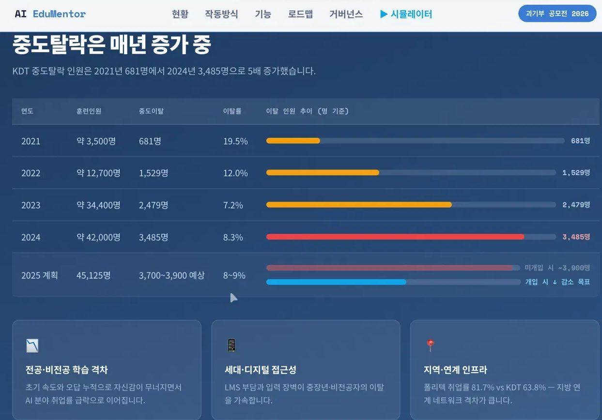
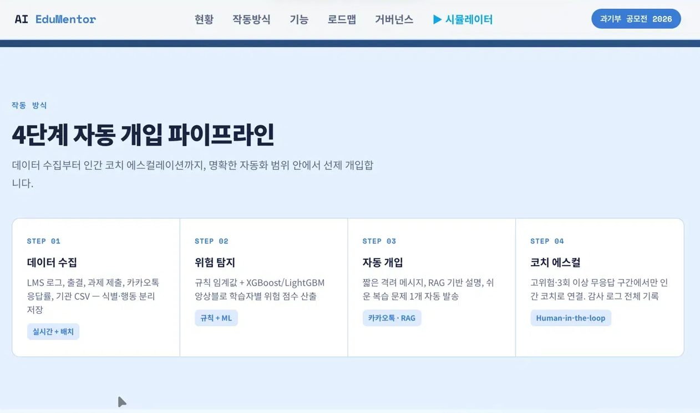
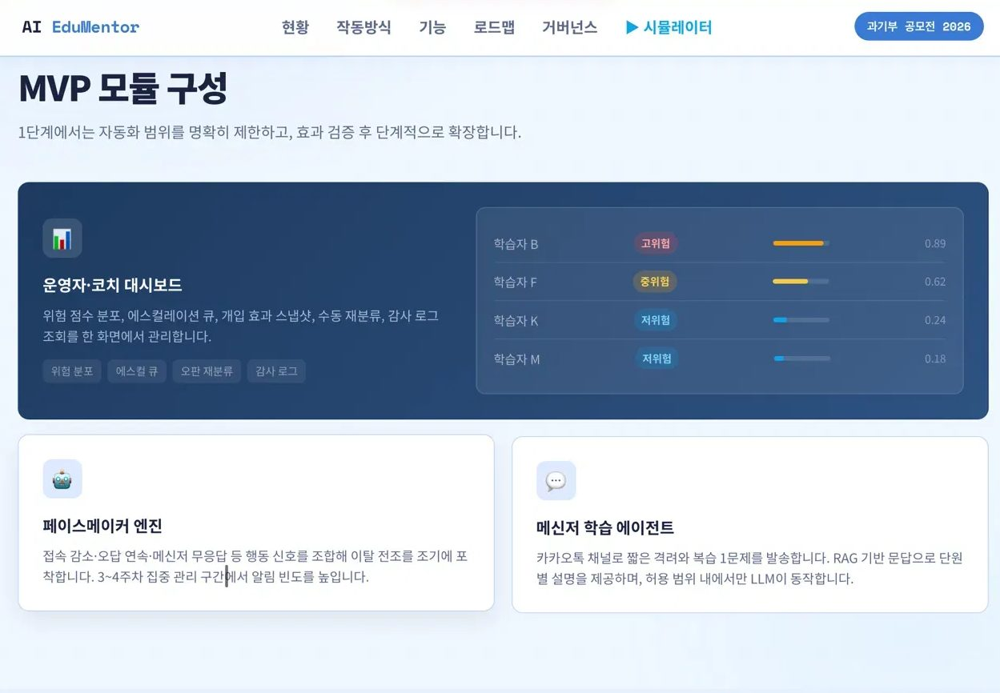
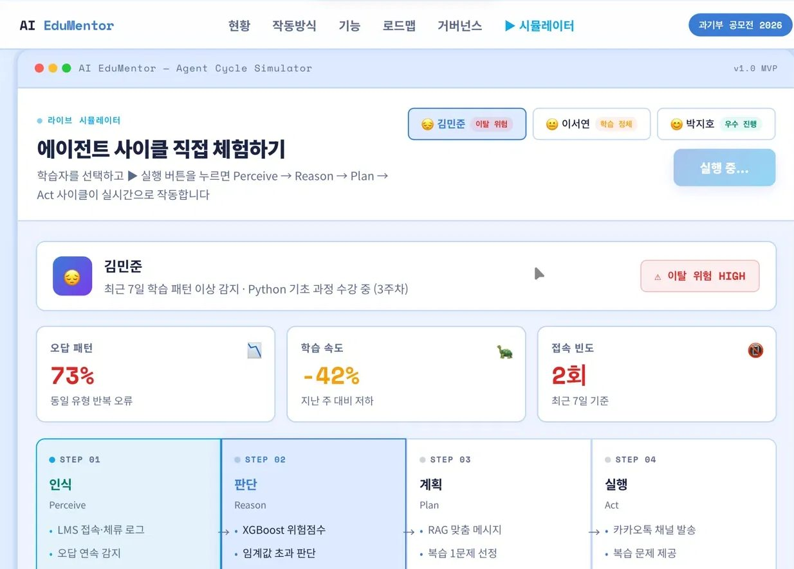
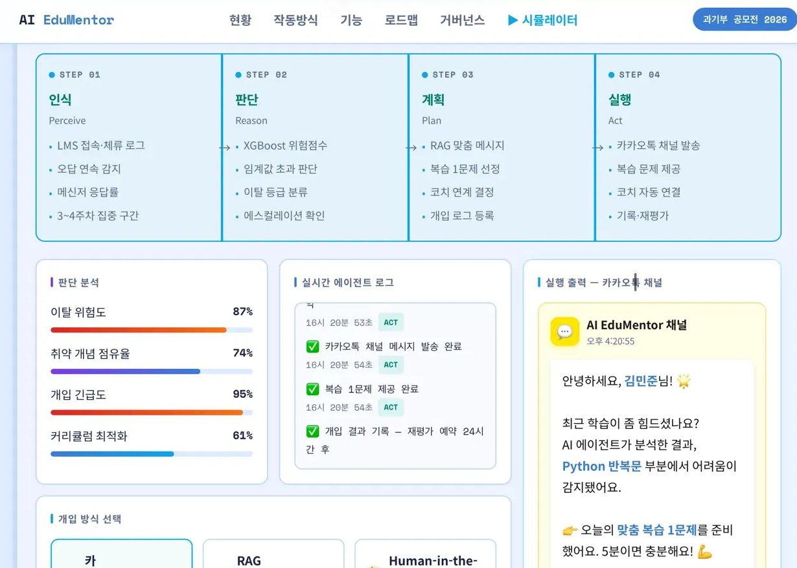
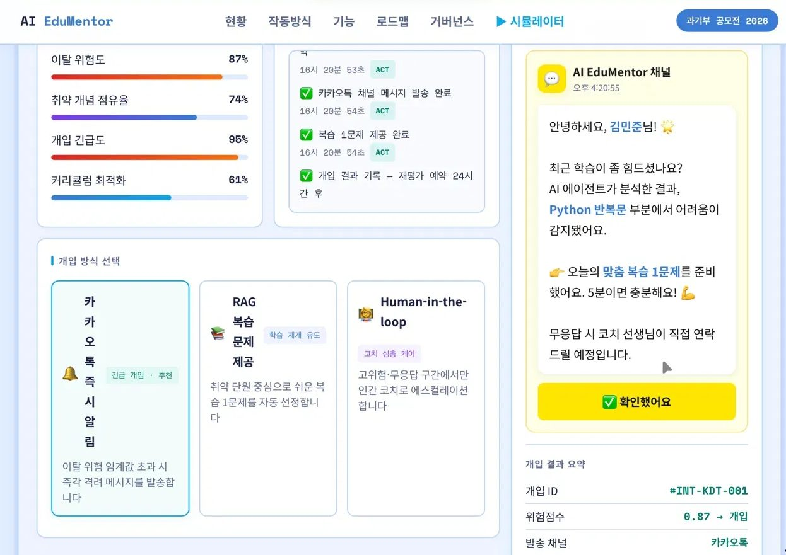
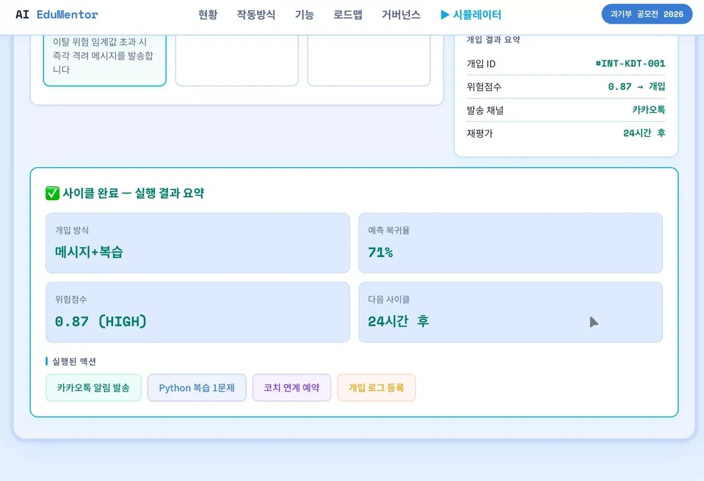
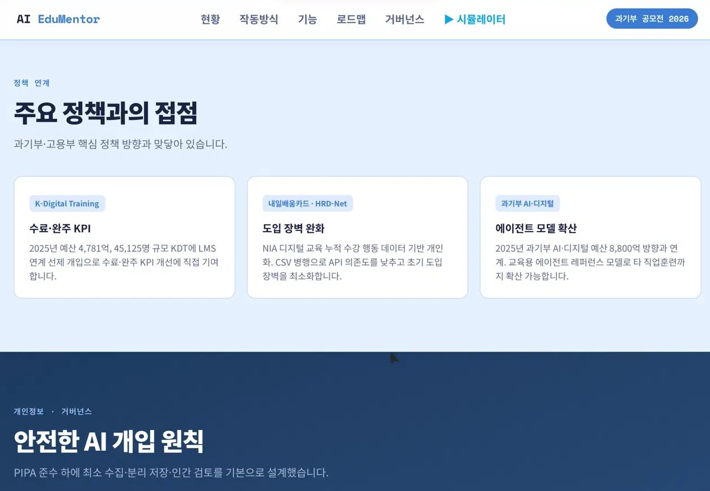
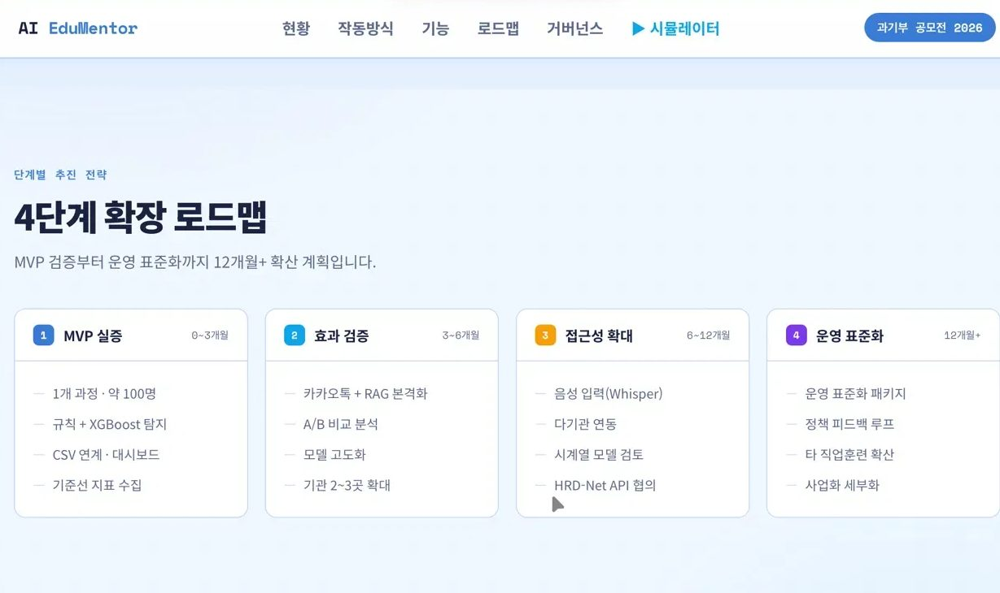
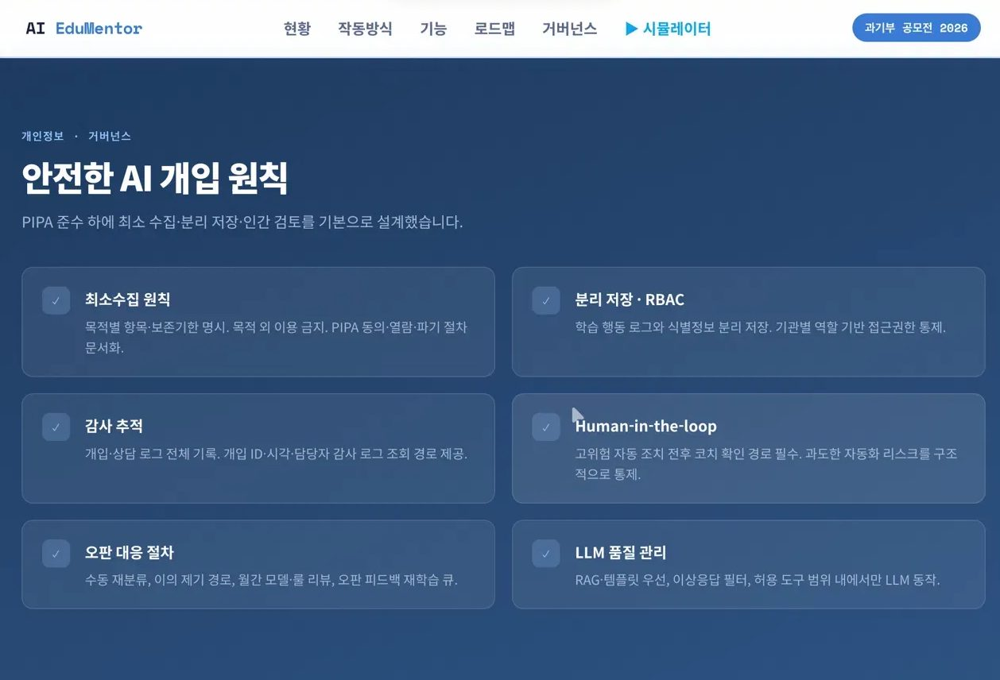
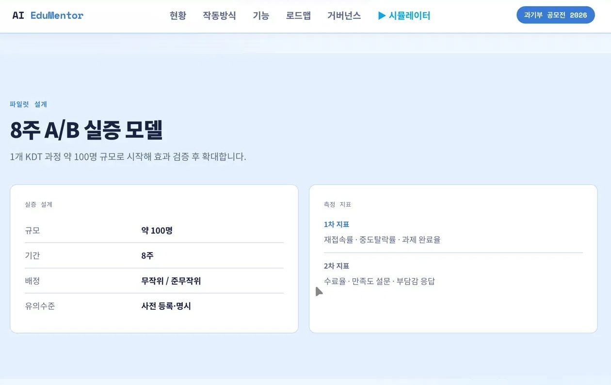
교육 현장에서 관찰한 "왜 학습자가 중간에 멈추는가"라는 질문을 AI 시스템으로 구조화하는 경험이었습니다.
ThinkWise · 청바지 프로젝트에서 확인한 '좋은 정보'보다 '이해할 수 있는 흐름'이라는 관점을, 이번 프로젝트에서는 사람이 아닌 AI가 그 역할을 대신하도록 구조화했습니다. 데이터로 감지하고 · 사람 언어로 판단하고 · 카톡으로 전달한다는 흐름은, 결국 지금까지 해온 '사용자 언어로 번역하기'의 확장이었습니다.